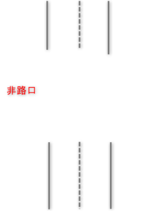
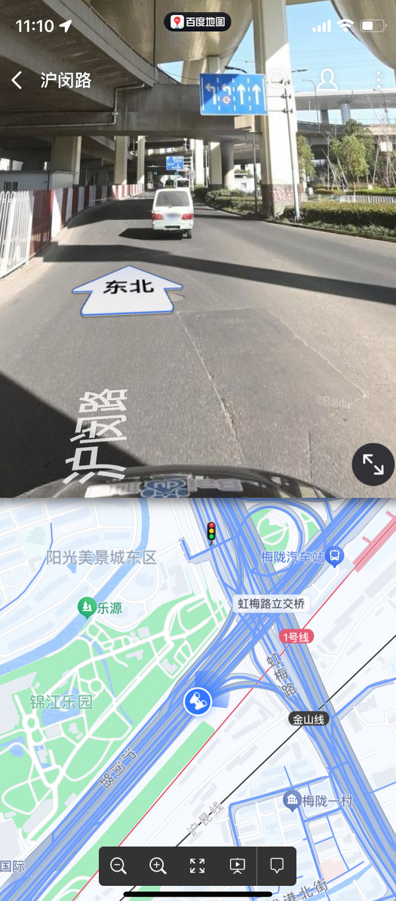
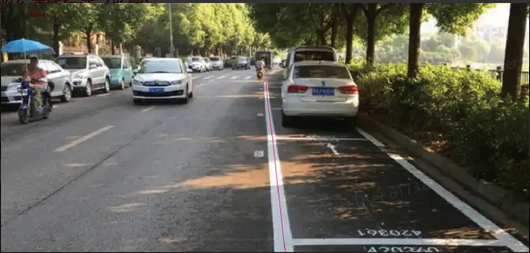
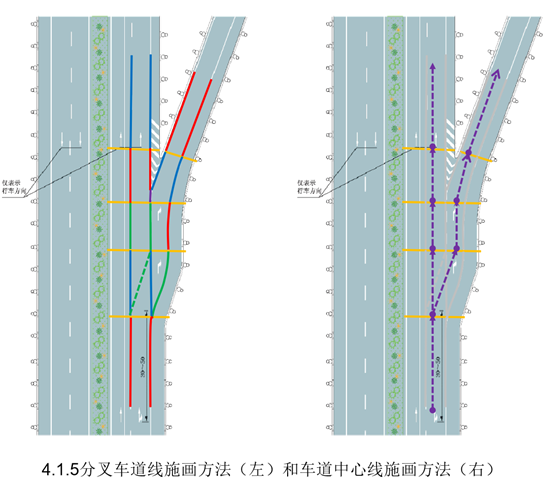
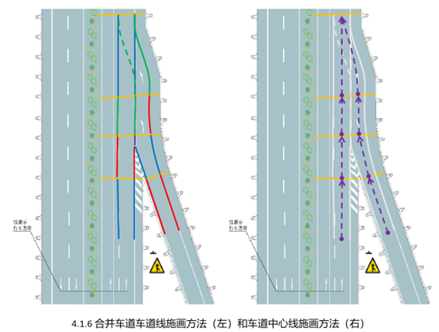
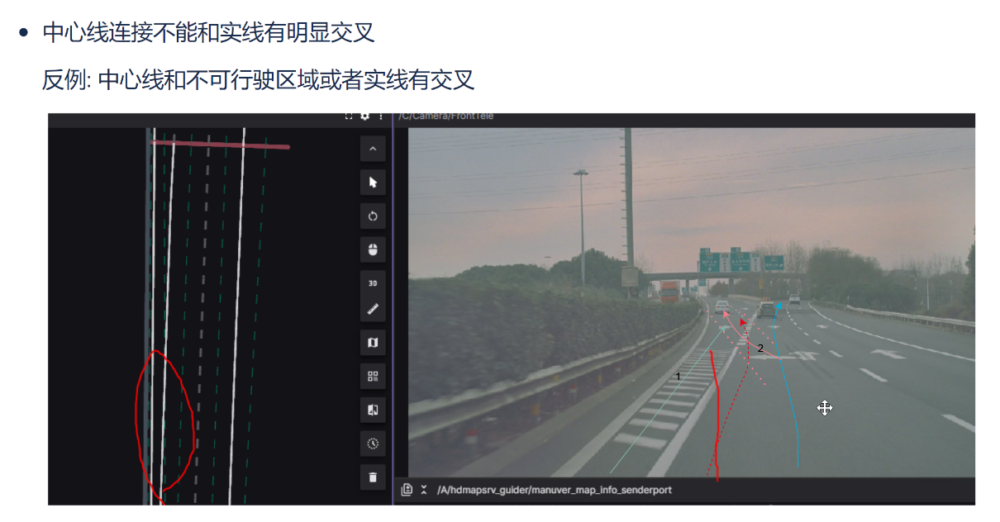
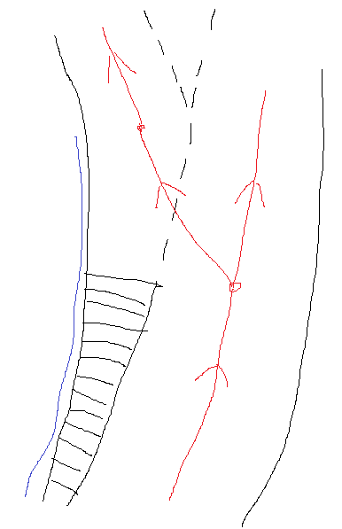
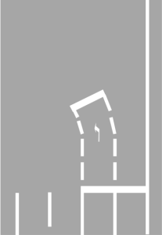

Function
enter
Sensor input
|
Camera Type |
Front Wide(Main) |
Front Tele(Narrow) |
Wing Cam(Side) |
Rear |
|
Imager/CMOS |
OV OX08B |
OV OX08B |
OV OX03C |
OV OX03C |
|
Number |
1 |
1 |
2 or 4 |
1 |
|
FOV(degree) |
H-120/V-65 |
H-30/V-14 |
H-100/V-65 |
H-60/V-35 |
|
Resolution |
3840*2160 |
3840*2160 |
1920*1280 |
1920*1280 |
Calibrate input
1. CAM inside and outside ginseng
2. Local Location Pose Information
Output
The lane line must be bound to each other and whether there is a separate lane line (the controversy is whether the selection of the central line ignores some lane lines)
Each lane line related output is as follows:
The direction direction of the lane line is represented by the order of the point, that is, the key point of the lane line Arrange along the driving direction or from near and far
Binded central line?
The lane line is one -the -world relationship?
Lane attribute
Example: Divided by different attributes, that is, a single instance Lane Attribute unique
Double line: Output rules, two lines take the middle virtual line or two single -line independent output plus binding relationship
Color: white, yellow, others
Special FUNCTION: Dynasties, parking spaces, longitudinal deceleration lines
track ID
Location: left, right, left, right, right, other, others
Line line output range:
Real visible lane line
Virtual lanes caused by changes in the number of lanes
The actual lane line but the virtual lane line required for the central line (such as the intersection, the road is only the road, see the scene analysis below)
Function analysis
Lane -free scene scene
|
|
Scenes |
need |
|
1 |
 |
There is a vacancy in normal non -intersection The threshold setting, the vacancies are not large, smaller connection output? |
|
2 |
|
Ultra -wide road, there are only lanes on both sides The lane line can be output, but how is the central line deal? If the central line output, the virtual lane line needs |
|
3 |
 |
There is no lane without lane, no output |

Non -motorized lane


1. Does the lane line (sticker along the path) of the Non -Motorized Lane on the right of the figure need to be output?If the output is needed, is there any accuracy requirements?To be determined
Parking space line SCENES
Do I need to output the left and right lane lines?

Ring scene (need to be combined with the central line to define the virtual lane line)
Ordinary ramp SCENES
Do you need to output the real -world MS point
Out of the central line according to the law of driving, need Define virtual lane The central line label rules.You need to determine the newly perceled NEED
The relationship between the virtual line and the real lane line


(NEED reference from the system) If there are multiple LANE in the ramp, you need to avoid connections in the form of the left figure (too close to the boundary), use the connection of the type right type type as much as possible.
Diversion area scene
The output scheme of the central line of the diversion area is 1,2 as shown in the figure
The way to output 2 from the principle will be very inconsistent
From the demand of PNC, the central line and the inability to travel cannot be crossed. In terms of visual perception, there are binding of lane lines on both sides and central lines.
Method 1. The lane line is real visible; solution 2, lane lines need to ignore part of the real visible line (at the left of the top of the proximal end, the blue part on the right)
 
Cross intersection guide lead
Does the guide line need output

To be transferred
Whether the line in the area to be transferred needs to be output

Discussion on whether you need to replenish virtual lanes
The virtual lane refers to the lane of the left and right lanes in the intersection and other areas. Do you need to be a virtual lane line at this time
Discussion on whether you need brain supplementation/or low visible lanes
If you need to output blocking/or visible low lanes, perception should be strongly dependent on the lane -level map prior information.

It is difficult to determine whether there are lanes/and corresponding lanes by perception of the obscure position.(If the person is marked, the person cannot Only through the picture Draw a lane that is blocked, and there is no corresponding ability to perceive the default)
If there is no lane -level map priority (ADAS/SD+ MAP), it is difficult to learn through the network (maybe it may be overfit at a limited data set).Even if it can output the obscure lanes, the reference value is not great.
In addition, from the perspective of perception algorithm, the lane and passive obstacles outside the hard isolation belt (the bus in the picture above) are blocked by One task EssenceIt is difficult to distinguish from the picture itself The lane outside the hard isolation belt does not require output and The lane covering the passive obstacle needs to be output 。
In addition, when there is no lane -level map prior data for the time being, can it be tied to a Plugin first to be tied to a Plugin.That is, the current Baseline version is not supported, but it can be compatible with this Plugin in the future.It maintains the unity of the perception plan, but also takes into account the focus of different stages.